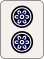
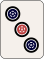
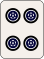
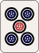
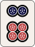
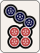
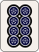
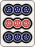

청일색 다면대기 패턴 치트시트
1. 실전 빈출 핵심 다면대기 패턴
복잡한 청일색 손패 속에서 자주 등장하는 기본 3면대기 및 5면대기 형태의 패턴 목록입니다.



안커(222)와 연속된 수패(34)가 결합되는 2·5통 양면 대기 형태입니다.

중앙 패(4통)가 44-345 로 나누던, 444-35 로 나누던 4통이 대기입니다. 일반적으로 이 상태로 텐파이 된 경우라기 보다는 2,3,4,5,6 중 어느것이 붙어도 확장 가능한 발전의 형태를 의미합니다. 참고로, 이 상태로 텐파이라면 다른 쪽에 대기가 하나 더 있는 샤보대기 가능성이 높습니다.
안커(222) + 3연패(345) 결합으로 이 자체로 이미 몸통이 2개 만들어 진 상황이지만, 1,2,3,4,5,6 중 어느것이 붙어도 확장 가능한 발전의 형태입니다.
2. 형태별 손패 구성 및 대기패 한눈에 보기
13장 실전 텐파이 손패에서 자주 만나는 핵심 구조별 전체 손패 구성과 해당되는 대기패 정리입니다.




양쪽 안커(222, 888) 사이에 연속된 순자가 끼어있어 2-5-8통으로 깔끔하게 확장되는 대기입니다. 추가로 9통 역시 샤보대기로 화료가 가능합니다,.
연속된 또이츠와 안커가 복합되어 량페코 구조 및 단기/양면 대기가 광범위하게 넓어지는 다면 대기입니다. 3,4,6,7 은 샤보대기가 되며 거기에 추가로 2-5-8의 3면대까지 조합되어, 총 7면 대기입니다.